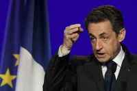

Raquel Villaécija | Agencias @ 24-03-2012 17:49
París.- "No dejaré a nadie que ponga en duda el honor de los hombres que han puesto fin a la trayectoria de un terrorista monstruoso", asegura.
"Cada uno puede dudar sobre la investigación, el derecho a la crítica está abierto. Pero no dejaré a nadie que ponga en duda el honor de los hombres que han puesto fin, arriesgando sus vidas, a la trayectoria de un terrorista monstruoso". Con estas palabras, el presidente galo, Nicolas Sarkozy, ha defendido este sábado la actuación policial que este jueves acabó con la vida del 'asesino de la moto', Mohamed Merah.
El presidente galo salía así al paso de las críticas que ha despertado la operación que, tras 32 horas de cerco, abatió al yihadista, que en las últimas semanas mató a tres soldados, tres niños y el profesor de una escuela judía. "Asumo la totalidad de decisiones que han conducido a la neutralización definitiva de un asesino monstruoso", aseguró Sarkozy durante un mitin en Rueil-Malmaison, a las afueras de París.
Sarkozy se presentó como el garante del honor "de esos hombres que cuidan de nuestra democracia, de nuestros derechos, de nuestra libertad". El candidato conservador rindió homenaje a la "eficacia y el coraje" de las fuerzas del orden francesas y consideró que la neutralización de Merah se produjo en un plazo relativamente breve.
Esta misma mañana, el presidente francés ha celebrado una reunión en el Palacio del Elíseo con varios miembros de su gabinete y responsables del cuerpo de policía para abordar cuestiones relacionadas con la seguridad, toda vez que la eficacia de las autoridades policiales en la investigación ha sido puesta en tela de juicio. De momento ha trascendido que este domingo se levantará el nivel de alerta escarlata.
Junto al jefe de Estado han participado en el encuentro el primer ministro Francois Fillon, Claude Guéant (Interior) y Michel Mercier (Justicia), así como los directores de la policía nacional, inteligencia interna (DCRI) y externa (DGSE).
El perfil del asesino de Toulouse y Montauban -delincuente reincidente y próximo a posiciones islamistas radicales que no era desconocido para las autoridades galas- así como su final han generado controversia, hasta el punto de hablarse de posibles fallos en su vigilancia.
En ese sentido, el candidato socialista a la presidencia, François Hollande, se había preguntado si los servicios de espionaje franceses no habían vigilado lo suficiente a Merah, pese a sus vínculos con medios salafistas.
También es objeto de polémica la operación llevada a cabo las fuerzas de élite de la policía (RAID) para neutralizar a Mohamed Merah. En plena campaña electoral, dicha actuación ha sido cuestionada y hay quienes sostienen que hubiera sido posible arrestar a Merah con vida.
Una vez que Merah fue abatido, Sarkozy anunció el fortalecimiento de la ley para luchar contra el terrorismo y declaró que se castigaría a quienes entrasen en páginas webs que hagan apología del terrorismo.
Durante su mitin de este sábado, Sarkozy, reiteró sus proyectos de perseguir a quienes visiten de forma habitual páginas web que hagan apología del terrorismo y quienes sigan en el extranjero cursos de adoctrinamiento, como los que hizo Merah en Afganistán y Pakistán.
El Ejecutivo galo ha rechazado las críticas al operativo de la policía que terminó con la muerte de Mohamed Merah. Éstas tienen "motivaciones políticas" y no son apropiadas, ha denunciado el ministro del Interior, Claude Guéant, al diario 'Le Figaro'. "No hay que olvidar que hay siete víctimas, entre ellas tres niños", ha añadido, al tiempo que ha pedido a todos los involucrados "dignidad y respeto".
"Es inaceptable poner en duda la eficiencia de la policía", ha abundado el ministro. "El drama de Toulouse y Montauban es un recordatorio de la amenaza terrorista que aún se cierne sobre el país", ha recalcado Guéant.
"Nunca antes Francia había estado confrontada con un asesino de esta naturaleza. Por eso ha sido muy difícil para las fuerzas de seguridad predecir las acciones de este 'lobo solitario'", ha señalado tal vez con las palabras de Hollande en mente el ministro, quien había supervisado la acción de la policía.
Guéant también ha rechazado la crítica de varios expertos al operativo. Al respecto, el ministro ha especificado que el uso de gas está prohibido según las convenciones internacionales. "La polémica proviene de personas sin conocimiento de la situación", ha concluido.
Por su parte, el jefe del operativo policial, Amaury de Hautecloque, ha explicado que Merah quería morir como mártir. "El quería ir con Allah y sus 72 vírgenes. No hubo otra posibilidad que matarlo", ha admitido al diario 'Le Figaro'.